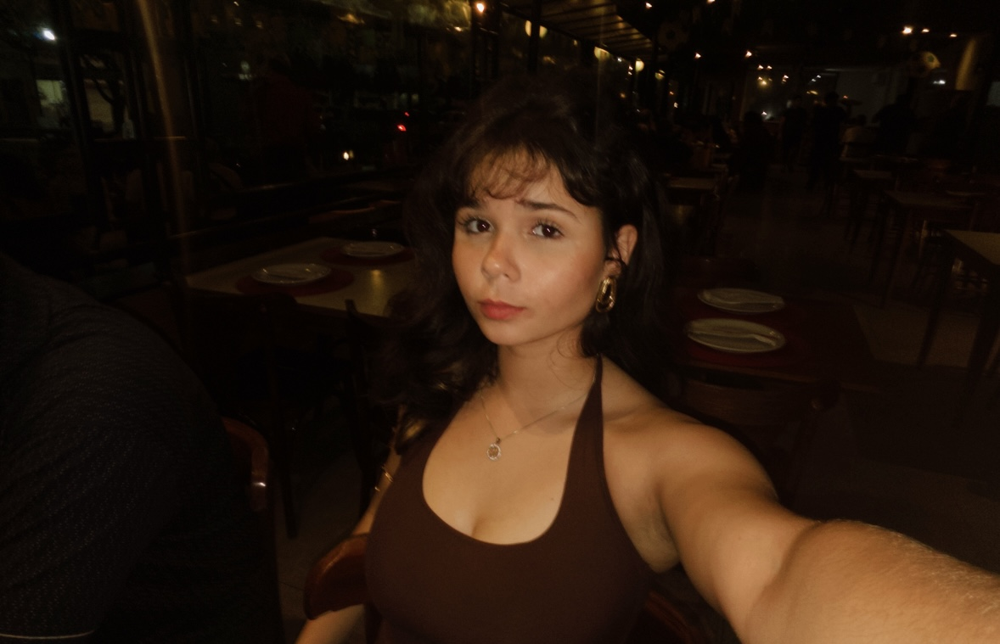
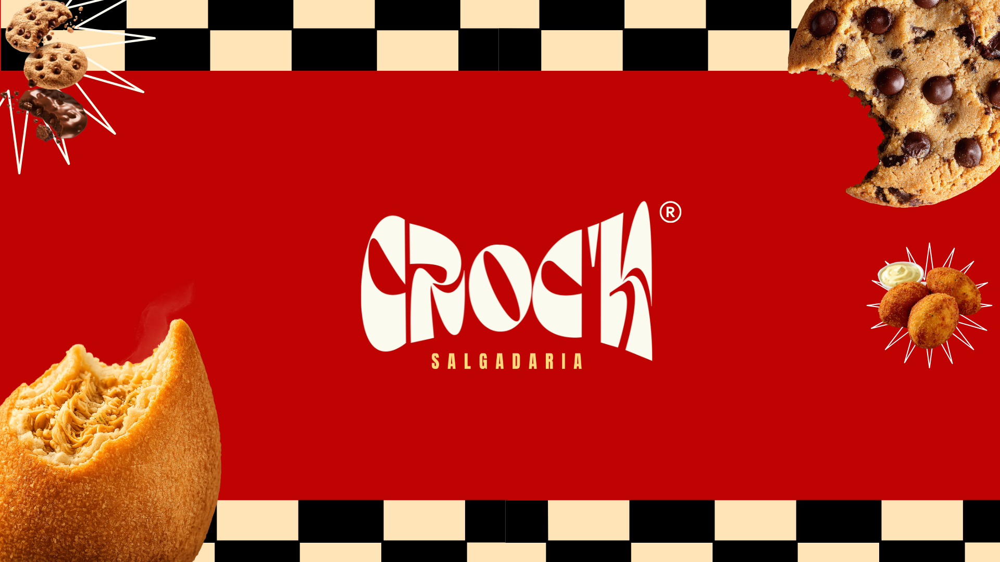
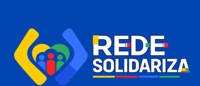

Logo e identidade visual
Nome, símbolo, cores, tipografia e o jeito de a marca aparecer em embalagens, redes e vitrine.
Portfólio · Design & Interface
Sou a Bianca Vieira, designer e estudante de Informática para Internet. Crio marcas e interfaces com personalidade, e ainda entendo o código por trás delas.

Sobre mim
Design, para mim, sempre foi o lugar onde eu posso expressar quem eu sou.
Gosto de marcas que têm identidade de verdade, daquelas que você reconhece antes mesmo de ler o nome. Esse olhar vem do design, mas também de outras partes da minha vida: dos treinos e da alimentação, onde aprendi que resultado vem de rotina, disciplina e de liderar a mim mesma quando ninguém está cobrando.
Hoje estudo Informática para Internet e tenho 2 anos de prática em design. Nos projetos em equipe, costumo ser a pessoa que cuida da ideia e da interface, enquanto o time constrói o código. Como também entendo HTML, falo a língua dos dois lados, e isso deixa a conversa (e a entrega) bem mais simples.
Cada cliente pede algo diferente, e eu gosto de me aproximar do gosto dele sem perder o cuidado com a estética. É assim que uma marca deixa de ser só um logo e vira algo que as pessoas procuram de novo.
O que eu crio
Nome, símbolo, cores, tipografia e o jeito de a marca aparecer em embalagens, redes e vitrine.
Telas organizadas no Figma, pensadas para quem usa e prontas para o time de desenvolvimento.
Conheço HTML, então desenho já pensando no que é possível construir.
Estudos de caso

Case principal · Branding
Uma salgadaria que queria ser lembrada pela marca, não só pelo sabor.

Case · Interface web
Um site que liga quem quer doar a quem precisa, sem bagunça e sem desperdício.
Case · Branding minimalista
Uma loja de cookies com visual limpo, elegante e fácil de reconhecer.
Habilidades
Estudo Informática para Internet, então a parte de código só tende a crescer.
Contato
Me conta sobre o seu projeto. Vou te ajudar a criar uma identidade que seja a sua cara e que o seu cliente reconheça de longe.
Chamar no Instagram ↗